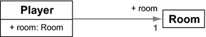

5.7 Assoziationen zwischen Objekten
Eine wichtige Eigenschaft objektorientierter Systeme ist der Austausch von Nachrichten untereinander. Dazu »kennt« ein Objekt andere Objekte und kann Anforderungen weitergeben. Diese Verbindung nennt sich Assoziation und ist das wichtigste Werkzeug bei der Bildung von Objektverbänden.
Assoziationstypen
Bei Assoziationen ist zu unterscheiden, ob nur eine Seite die andere kennt oder ob eine Navigation in beiden Richtungen möglich ist:
- Eine unidirektionale Beziehung geht nur in eine Richtung (ein Fan kennt seine Band, aber nicht umgekehrt).
- Eine bidirektionale Beziehung geht in beide Richtungen (Raum kennt Spieler und Spieler kennt Raum). Eine bidirektionale Beziehung ist natürlich ein großer Vorteil, da die Anwendung die Assoziation in beliebiger Richtung ablaufen kann.
Daneben gibt es bei Beziehungen die Multiplizität, auch Kardinalität genannt. Sie sagt aus, mit wie vielen Objekten eine Seite eine Beziehung haben kann. Übliche Beziehungen sind 1:1 und 1:n.
5.7.1 Unidirektionale 1:1-Beziehung
Damit ein Spieler sich in einem Raum befinden kann, lässt sich in Player eine Referenzvariable vom Typ Room anlegen. In Java sähe das in etwa so aus:
Listing 5.47: com/tutego/insel/game/va/Player.java, Player
public class Player
{
public Room room;
}
Listing 5.48: com/tutego/insel/game/va/Room.java, Room
public class Room
{
}
Zur Laufzeit müssen natürlich noch die Verweise gesetzt werden:
Listing 5.49: com/tutego/insel/game/va/Playground.java, main()
Player buster = new Player();
Room tower = new Room();
buster.room = tower; // Buster kommt in den Tower
Assoziationen in der UML
Die UML stellt Assoziationen durch eine Linie zwischen den beteiligten Klassen dar. Hat eine Assoziation eine Richtung, zeigt ein Pfeil am Ende der Assoziation diese an. Wenn es keine Pfeile gibt, heißt das nur, dass die Richtung noch nicht genauer spezifiziert ist, und nicht automatisch, dass die Beziehung bidirektional ist.
Abbildung 5.20: Gerichtete Assoziation im UML-Diagramm
Die Multiplizität wird angeben als »untere Grenze..obere Grenze«, etwa 1..4. Außerdem lässt sich in UML über eine Rolle angeben, welche Aufgabe die Beziehung für eine Seite hat. Die Rollen sind wichtig für reflexive Assoziationen (auch zirkuläre oder rekursive Assoziationen genannt), wenn ein Typ auf sich selbst zeigt. Ein beliebtes Beispiel ist der Typ Person mit den Rollen Chef und Mitarbeiter.
5.7.2 Bidirektionale 1:1-Beziehungen
Diese gerichteten Assoziationen sind in Java sehr einfach umzusetzen, wie wir im Beispiel gesehen haben. Beidseitige Assoziationen erscheinen auf den ersten Blick auch einfach, da nur die Gegenseite um eine Verweisvariable erweitert werden muss. Beginnen wir mit dem Szenario, dass der Spieler seinen Raum und der Raum seinen Spieler kennen soll:
Listing 5.50: com/tutego/insel/game/vb/Player.java, Player
public class Player
{
public Room room;
}
Listing 5.51: com/tutego/insel/game/vb/Room.java, Room
public class Room
{
public Player player;
}
Abbildung 5.21: Bei bidirektionalen Beziehungen gibt es im UML-Diagramm zwei Pfeile.
Verbinden wir das:
Listing 5.52: com/tutego/insel/game/vb/Playground.java, main()
Player buster = new Player();
Room tower = new Room();
buster.room = tower;
tower.player = buster;
So einfach ist es aber nicht! Bidirektionale Beziehungen erfordern etwas mehr Programmieraufwand, da sichergestellt sein muss, dass beide Seiten eine gültige Referenz besitzen. Denn wird die Assoziation auf einer Seite aufgekündigt, etwa durch Setzen der Referenz auf null, muss auch die andere Seite die Referenz lösen:
buster.room = null; // Spieler will nicht mehr im Raum sein
Auch kann es passieren, dass zwei Räume angeben, einen Spieler zu besitzen, doch der Spieler kennt von der Modellierung her nur genau einen Raum:
Listing 5.53: com/tutego/insel/game/vb/InvalidPlayground.java, main()
Player buster = new Player();
Room tower = new Room();
buster.room = tower;
tower.player = buster;
Room toilet = new Room();
toilet.player = buster;
System.out.println( buster ); // com.tutego.insel.game.vb.Player@aaaaaa
System.out.println( tower ); // com.tutego.insel.game.vb.Room@444444
System.out.println( toilet ); // com.tutego.insel.game.vb.Room@999999
System.out.println( buster.room ); // com.tutego.insel.game.vb.Room@444444
System.out.println( tower.player ); // com.tutego.insel.game.vb.Player@aaaaaa
System.out.println( toilet.player ); // com.tutego.insel.game.vb.Player@aaaaaa
An der Ausgabe ist abzulesen, dass sich Buster im Tower befindet, aber auch die Toilette sagt, dass Buster dort ist (die Kennungen hinter @ sind für das Buch durch gut unterscheidbare Zeichenketten ersetzt worden. Sie sind bei jedem Aufruf anders).
Die Wurzel des Übels liegt in den Variablen. Variablen können keine Konsistenzbedingungen aufrechterhalten, Methoden können wie in einer Transaktion aber mehrere Operationen durchführen und von einem korrekten Zustand in den nächsten überführen. Daher erfolgt diese Kontrolle am besten mit Zugriffsmethoden, etwa wie setRoom() und setPlayer().
5.7.3 Unidirektionale 1:n-Beziehung
Immer dann, wenn ein Objekt mehrere andere Objekte referenzieren muss, reicht eine einfache Referenzvariable vom Typ der anderen Seite nicht mehr aus. Dann sind Datenstrukturen gefragt, die mehrere Referenzen aufnehmen können, etwa dann, wenn sich in einem Raum mehrere Spieler befinden können oder wenn ein Spieler mehrere Gegenstände mit sich trägt. Wir müssen auf der 1-Seite eine Datenstruktur verwenden, die entweder eine feste oder eine dynamische Anzahl anderer Objekte aufnimmt. Eine Handy-Tastatur hat beispielsweise nur eine feste Anzahl von Tasten und ein Tisch nur eine feste Anzahl von Beinen. Bei Sammlungen dieser Art ist ein Array gut geeignet. Bei anderen Beziehungen, wo die Anzahl referenzierter Objekte dynamisch ist, ist ein Array wenig elegant, da die manuellen Vergrößerungen oder Verkleinerungen mühevoll sind.
Dynamische Datenstruktur ArrayList
Wollen wir zum Beispiel erlauben, dass ein Spieler mehrere Gegenstände tragen kann oder eine unbekannte Anzahl Spieler sich in einem Raum befinden können, ist eine dynamische Datenstruktur wie java.util.ArrayList sinnvoller. Genauer wollen wir uns zwar erst in Kapitel 13, »Einführung in Datenstrukturen und Algorithmen«, mit besagten Datenstrukturen und Algorithmen beschäftigen, doch seien an dieser Stelle schon drei Methoden der ArrayList vorgestellt, die Elemente in einer Liste (Sequenz) hält:
- boolean add( E o ) fügt ein Objekt vom Typ E der Liste hinzu.
- int size() liefert die Anzahl der Elemente in der Liste.
- E get( int index ) liefert das Element an der Stelle index.
Mit diesem Wissen wollen wir dem Raum Methoden geben, sodass er beliebig viele Spieler aufnehmen kann. Für den unidirektionalen Fall ist die Player-Klasse wieder einfach:
Listing 5.54: com/tutego/insel/game/vc/Player.java, Player
public class Player
{
public String name;
public Player( String name )
{
this.name = name;
}
}
Der Raum bekommt ein internes Attribut players vom Typ der ArrayList:
private ArrayList<Player> players = new ArrayList<Player>();
Dass Angaben in spitzen Klammern hinter dem Typ stehen, liegt an den Java Generics – sie besagen, dass die ArrayList nur Player aufnehmen wird und keine anderen Dinge (wie Geister). Die Raum-Klasse wird dann zu:
Listing 5.55: com/tutego/insel/game/vc/Room.java, Room
import java.util.ArrayList;
public class Room
{
private ArrayList<Player> players = new ArrayList<Player>();
public void addPlayer( Player player )
{
players.add( player );
}
public void listPlayers()
{
for ( Player player : players )
System.out.println( player.name );
}
}
Abbildung 5.22: Room referenziert Player
Die Datenstruktur selbst ist privat, und die addPlayer()-Methode fügt einen Spieler in die ArrayList ein. Eine Besonderheit bietet die Methode listPlayers(), denn sie nutzt das erweiterte for zum Durchlaufen aller Spieler. Beim erweiterten for ist rechts vom Doppelpunkt nicht nur ein Array erlaubt, sondern auch eine Datenstruktur wie die Liste. Nachdem also zwei Spieler mit addPlayer() hinzugefügt wurden, wird listPlayers() die beiden Spielernamen ausgeben:
Listing 5.56: com/tutego/insel/game/vc/Playground.java, main()
Room oceanLiner = new Room();
oceanLiner.addPlayer( new Player( "Tim" ) );
oceanLiner.addPlayer( new Player( "Jorry" ) );
oceanLiner.listPlayers(); // Tim Jorry
Ihr Kommentar
Wie hat Ihnen das <openbook> gefallen? Wir freuen uns immer über Ihre freundlichen und kritischen Rückmeldungen.
 Jetzt bestellen
Jetzt bestellen


{kind=link}
{kind=link}
{kind=link}